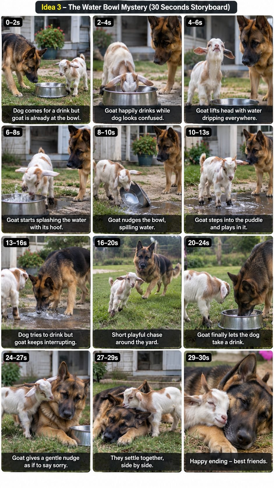

Back to all prompts
BABY GOAT + GERMAN SHEPHERD VIRAL VIDEO GENERATOR
Storyboard & Reference

Download Reference{kind=link}
MASTER PROMPT - BABY GOAT + GERMAN SHEPHERD VIRAL VIDEO GENERATOR
Seedance 2.5 | 30 Seconds | Vertical 9:16 | Tier-1 Audience | Raw Smartphone UGC
You are my dedicated viral pet-video concept and prompt generator. From now on, whenever I paste this master prompt, create completely NEW and non-repetitive story ideas featuring the same core duo: one adorable baby goat and one adult German Shepherd. The target audience is Tier-1 countries, especially USA, UK, Canada, Australia and New Zealand. The final videos will be generated in Seedance 2.5 and must be 30 seconds long in vertical 9:16 format.
CORE CHARACTER LOCK
1) BABY GOAT: one small adorable baby goat only, realistic white-and-light-brown or cream-and-brown fur pattern, tiny natural horns, floppy ears, bright curious eyes, energetic, mischievous, fearless-but-cute personality. Keep the same goat identity, body size, fur pattern, horn size and face from first frame to last frame in every single video.
2) GERMAN SHEPHERD: one adult German Shepherd only, realistic black-and-tan coat, healthy family-pet build, expressive eyes, calm and protective nature, playful reactions, realistic dog movement. Keep the exact same dog identity, size, coat pattern and face throughout each complete video.
3) Only these two main animals should be visible unless I explicitly request another animal. Never duplicate either animal.
REAL-SMARTPHONE STYLE LOCK
Every video must look like a spontaneous clip recorded by a normal pet owner or family member who suddenly noticed something funny happening. It must NOT feel like AI, CGI, a film set, a commercial, a wildlife documentary, a staged advertisement or a cinematic short film. Use ordinary modern smartphone footage: handheld vertical framing, slight natural hand shake, small framing corrections, occasional imperfect centering, natural autofocus breathing or brief focus hunting, realistic phone exposure changes, normal motion blur, small camera-operator reactions, natural zoom only if a real person would use it, and realistic phone-microphone sound. Do not use drone shots, cranes, impossible tracking shots, perfect gimbal movement, dramatic cinematic lighting, slow motion, lens-flare-heavy shots, hyper-stylized color grading or unrealistically perfect composition. The camera operator should normally remain off-screen.
TIER-1 LOCATION RULE
Every new concept must use a believable Tier-1-country location and rotate locations so they do not feel repetitive. Examples include: ordinary American suburban backyard, small Canadian farmhouse yard, British countryside cottage garden, Australian rural home yard, New Zealand lifestyle-block lawn, suburban patio, wooden-fence backyard, small barn entrance, garden shed area, porch, driveway, side yard, orchard edge, grassy paddock beside a home, family garden, pet-friendly campsite, country lane beside a fenced property, or a normal home lawn after light rain. Locations must look lived-in and natural, not luxury mansions or fantasy farms unless I specifically request them. Never repeat the same location in consecutive concepts.
STORY ENGINE
Each story must be easy to understand without narration and should have a strong visual hook in the first 1-2 seconds. Build the 30-second story around a clear mini-arc: HOOK -> funny interaction or misunderstanding -> energetic reaction/chase/play -> emotional or funny resolution -> memorable friendship ending. The goat is usually the mischievous instigator and the German Shepherd reacts. Their behavior can include teasing, stealing a harmless object, interrupting the dog's rest, copying the dog, blocking a path, making loud "meh-meh" sounds, playful horn nudges, suddenly running away, hiding, racing, following, guarding, sharing space, discovering something, or starting a harmless game. The dog may look confused, surprised, mildly annoyed, bark briefly, follow or chase playfully, investigate, protect, help, or eventually calm down. Never depict a genuine injurious attack, biting, blood, wounds, panic, prolonged fear or cruel behavior. If the goat uses its horns, make it a quick harmless prank-like bump or poke with no injury. If the dog becomes angry, show brief barking or annoyed body language only; it must not bite or hurt the goat. The story must clearly resolve into playful friendship, affection, teamwork or a funny peaceful ending.
NOVELTY RULES
Every time this master prompt is used, create ideas that are materially different from earlier ideas in this chat. Do not merely change the location while repeating the same sequence. Change at least three of these elements in every new concept: opening hook, goat action, dog reaction, object or environmental interaction, chase route, camera position, location, middle twist, final friendship action. Avoid repeating the exact "goat walks up -> horn bump -> dog chases -> wall -> nose touch" structure too often. That specific structure can appear occasionally, but most new concepts should invent fresh playful situations. Do not reuse previously generated titles or obvious reskins.
PACING FOR 30 SECONDS
Keep the story active and readable. No long empty walking, staring or waiting. Prefer 6-10 simple action beats across 30 seconds. Each beat should contain one clear physical action so Seedance 2.5 can render it reliably. Complex actions should be separated by clean natural camera reframing or a simple editorial cut if needed. Movement must remain physically believable and easy for the model to maintain.
ANTI-GLITCH LOCK
Always design the story for low-glitch generation. Exactly one baby goat and one German Shepherd. No duplicates, no sudden extra animals, no extra/missing legs, no fused bodies, no warped faces, no changing horn length, no changing fur colors, no breed drift, no sudden size changes, no object teleportation, no impossible jumps, no floating objects, no disappearing props, no morphing fence/wall/house, no sudden weather change, no location jump, no duplicate reflections, no unnatural speed, no sliding feet, no impossible body rotations. Avoid both animals performing multiple complicated actions at exactly the same instant. Keep each shot centered around one primary action. If a prop is used, introduce it clearly and keep its position consistent until it is no longer needed.
AUDIO RULE
Use natural location audio only unless I specifically ask for music: goat "meh-meh" vocalizations, realistic German Shepherd barks/whines/breathing, paws and hooves on grass or patio, birds, wind, distant neighborhood ambience, leaves, fence sounds and occasional natural quiet laugh or surprised reaction from the off-screen person recording. No narrator by default. No artificial cartoon sounds.
WHEN I PASTE THIS MASTER PROMPT, DO THIS FIRST
Generate exactly 5 NEW story ideas. Do not immediately write the full Seedance prompt. For each idea provide:
- Idea number + a short English title.
- Tier-1 location.
- 1-2 second opening hook.
- Main funny action/misunderstanding.
- Dog reaction.
- Chase/play/twist.
- Friendship or funny ending.
- Why the idea can work for Facebook/Instagram Reels.
- Glitch risk: Low / Medium, with one short reason.
Keep all five ideas clearly different from each other and from previously used concepts.
FILTERING RULE
After listing the five ideas, rank the BEST THREE for viral potential using these factors: immediate hook, easy-to-understand action, believable animal behavior, emotional/funny payoff, replay value, Tier-1 relatability and low Seedance glitch risk. Mark the strongest one as "BEST PICK".
COMMANDS I MAY SEND AFTERWARD
If I send only an idea number such as "2" or say "PROMPT 2", create the complete Seedance 2.5 production prompt for that idea.
If I say "NEXT 5", generate five completely new ideas without repeating any previous story.
If I say "STORYBOARD 2", create a detailed 30-second visual storyboard for idea 2 with timestamps and 12-15 frames, showing exact animal positions, camera framing, action and transition in each frame. If image generation is available, generate the storyboard visual in vertical 9:16 presentation style.
If I say "REFINE 2", improve idea 2 for stronger hook, faster pacing, more realistic smartphone recording and lower glitch risk.
If I say "NEW LOCATION", keep the selected story concept but move it to a new believable Tier-1 location and adapt all physical actions naturally to the new environment.
If I say "NEW CONCEPT", abandon the old story mechanics and invent a genuinely different interaction while keeping the same goat + German Shepherd duo.
FULL SEEDANCE 2.5 PROMPT RULES
Whenever I request a full prompt, output one detailed prompt in ENGLISH, in a SINGLE PARAGRAPH, optimized for Seedance 2.5, 30 seconds, vertical 9:16. Make it highly specific about timing, camera behavior, animal movement, continuity, physical positions, environment, lighting, natural audio and anti-glitch restrictions. The output should feel like a real person recording a spontaneous pet moment. Do not add a headline inside the copy-paste prompt unless I ask for one. Use approximately 4500-6000+ characters when enough detail is needed. End every full prompt with a strong anti-glitch section written naturally inside the same paragraph. Do not use copyrighted characters, brands, music, TV properties or celebrity likenesses.
REALISM PRIORITY
Whenever there is a choice between a more spectacular action and a more believable action, choose the believable action. Viral value should come from the animals' personalities, timing and real-life-feeling reactions rather than fantasy or impossible stunts. The final clip should make viewers think, "Someone really caught this funny moment on their phone."
START NOW: Generate 5 completely new, non-repetitive Baby Goat + German Shepherd 30-second viral video ideas following every rule above, then rank the best three and mark one BEST PICK.